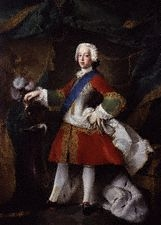
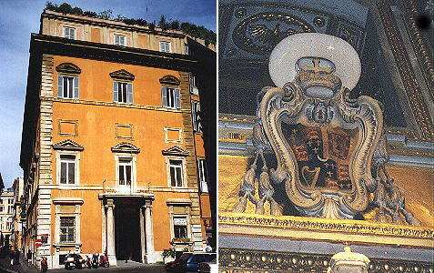

Oran Air Breith a Prionnsa Tearlach
le Iain Mac Lachlainn
A Song upon the Birth of Prince Charles
31st December 1720
by John McLachlan (1)
Tune - Mélodie (Pentatonic)
(As sung by Captain D.J. McKinnon (Barra) and recorded by J.L. Campbell on 28rd January 1950 and published in his "Highland Songs of the '45", 1984 edition )Sequenced by Christian Souchon (c) 2006


|
A SONG ON THE BIRTH OF PRINCE CHARLES 1. The tidings we have now received Which are freshly come to the land Have chased all my sorrow away And left me both joyful and proud No more are we going to be Under subjection to George Joy will come in the young Prince's time Peace will be to the exiles restored 2. A Phoenix is born o'er in Rome (1) A tale of great joy in its time May he who the King's right maintains Have strength and justice and aid. Fortune's wheel (2) will yet turn again And the man who's aloft will fall low The man who is climbing will rise And the other to earth will fall. 3. Already does his birthday star (3) Give a message and omen true, That a son of fortune (4) now comes From the Father of Grace for our guard; Whoe'er lifts against him his hand Will swift and sure judgment receive, On him will come war, famine, plague, With death from starvation his end. 3. Neptune does promise for him A sea as smooth as the land And Aeolus is ready always For him keeping his favoring winds; (5) Mars with his sword in his hand Will give victory wherever he be The herbs with their delicate leaves Give honor in their own abodes 4. A change will come o'er barren lands No thorn on the ground but will fade Every hill will be laid in smooth rigs And wheat will grow on the hillsides Contention no more shall we own Since the root that won't grow is consumed There's the corn-field now cleansed of its weeds Which did hinder the growth of our crop 5. Another tale that I'll not hide The woods will put leaves o'er our heads The earth will yield crops without stint The sea's fruit will fill every net Herds will give milk everywhere And honey on straw-tops be found Without want, unstinted, forever Without storms, but every wind warm. (6) Translated by John Lorne Campbell (1932) |
ORAN AIR BREITH A PRIONNSA TEARLACH 1. An naigheachd a fhuair sinn an dràsd' A thàinig oirnn nuadh do'n tir Chuir m'airtneal air chairtealan uam Dh'fhàg aigeantach, uallach mî Cha bhi sinn tuilleadh na's mo Aig Deôrsa fada fo chîs Thig sonas ri linn a' Phrionns'ôig 'S gheibh fir tha air fôgradh sîth. 2. Rugadh Phoenix thall anns an Rôimh (1) Sgeul aigeantach môr ri 'linn Gum bi neart agus ceart mar ri treôir Do'n fhear sheasas côir an Rîgh Théid a' chuibhle (2) fhathast mu'n cuairt 'S am fear a tha shuas, bidh e sios Bidh am fear a tha streapadh, gu h-ard, 'S fear eile gu làr tuitidh sîos 3. Tha rionnag a breithe (3) mar thà Toirt fios agus faisneachd fîor, Gur mac rath (4) a thàinig an dràsd' Chuir Athair nan Gràs 'gar dîon; 'N neach thogas 'na aghaidh a làmh Gheibh breitheanas àraid gu cinnt', Thig cogadh air, gort, agus plàigh, Us faighinn a' bhàis a chion bîdh. 4. Tha Neptun a' mionnachadh dhà Gum bheil muir dhà co réidh us tîr Tha Aeolus a'feitheamh a ghnàth 'S a'gleidheadh dhà bàidh a ghaoith (5) Tha Mars us a chlaidheamh 'na làimh Le buaidh-chath' 's gach àite am bî Tha plannta nan duilleagan tlàth Toirt urraim 'nan àiteachan fin 5. Thig mùthadh air fonn as droch-ghnè Cha bhi dris ann an làr nach crion Bidh gach tulach 'na iomairibh réidh 'S fàsaidh 'n cuithneachd air aodainn shliabh; Cha dean sinn tuilleadh cion-fàth O'n a theirig an fhreumh nach cinn Sin an gartlann a ghlanadh o'n chàrr Bha bacadh dhuinn fàs ar sîol 6. Sgeul eile cha cheil mi an dràsd' Cuiridh coille trom-bhlàth os ar cînn Cuiridh 'n talamh gun airceas de bhàrr Tacar mara cur làin's gach lîon Bidh bainn' aig an eallaich's gach àit' Mil air bhàrraibh nan sràbh's gach tîr Gun ghainne, gun airceas, gu bràth Gun ghaillionn ach blàths 's gach sian. (6) Source: "Highland songs of the '45" by John Lorne Campbell - 1932. |
CHANT SUR LA NAISSANCE DU PRINCE CHARLES 1. Les nouvelles qui nous parviennent Depuis le lointain continent Ont dissipé toutes mes peines J'en suis fier autant que content. Car ce que cet enfant augure, C'est la fin des Hanovriens: Après trente ans de dictature, La paix règne et l'exil prend fin 2. Car un Phénix naquit à Rome, (1) Mythique oiseau porteur de joie. Puisse-t-il rendre sa couronne Et sa puissance à notre roi. Tourne, la roue de la Fortune. (2) Qui tenait le faîte ait le bas! Et que celui-là qui décline A qui monte cède le pas! 3. L'astre nouveau (3) que l'on voit luire Sur ce berceau béni des dieux, (4) Salue celui qui nous délivre Messie du Miséricordieux. Lever la main sur lui, qui l'ose Encourt un châtiment prochain: A disette et peste il s'expose. Qu'il s'apprête à mourir de faim! 4. C'est la promesse de Neptune: Une mer plate comme un champ, Tandis qu'Eole sans rancune Lui réserve le meilleur vent. (5) Mars qui vient de saisir son glaive Le veut victorieux en tout lieu. Même la plus humble des herbes Prétend l'accueillir de son mieux. 5. C'en est fini des champs arides Et des ronces. C'en est fini. Aplanie, chaque pente rude Voit croître les blés à l'envi. Les dissensions vont disparaître Leurs racines sont consumées. Et l'ortie qui régnait en maître N'étouffe plus nos champs de blés. 6. D'autres bienfaits j'ai la prescience: Les bois de feuilles sont couverts, Le sol, de grains en abondance, Nos filets, emplis par la mer. De lait débordent les mamelles. Les chaumes sont couverts de miel. Cette abondance est éternelle Grâce à la clémence du ciel. (6) (Trad. Ch.Souchon (c) 2005) |
|
(1) Iain Mac Lachlainn (John McLachlan ) There is little information available on this author. In his "Bliadhna Thearlaich" published in 1844,John McKenzie writes: "This song was composed by John McLachlan of Kilbride in Nether Lorne. All the McLachlans were skilful at history and poetry and it has been said that they were the best Gaelic scholars in Scotland in their day. They left fifty books ...in the old Gaelic hand which the seanachies of Scotland and Ireland used to write. Twenty-one of these are still to be seen in the Advocates' Library at Glasgow" (in fact Edinburgh). The present poem demonstrates the smooth style and the knowledge of Latin and Gaelic mythology possessed by its author. (2) References to the goddess Fortune are frequent in Gaelic literature (for instance in John Roy Stewart's Culloden poems). (3) A new star appeared about the time of the Prince's birth, considered by the Jacobites as an excellent omen. (4) "Mac-rath" (son of fortune), a term for a lucky person. (5) See Alexander McDonald's Song of the Clans, stanza N°2, where McDonald, who may have known this poem reproduces the same idea. (6) The idea that the reign of a good king was distinguished by agricultural prosperity is an old cliché in Gaelic literature. ********** In fact the encouragements to recover his throne were not responded to by the Old pretender, but twenty-six years later by the young Prince whose birth was hailed by this surge of lyrical enthusiasm. After Queen Ann’s death in 1714 and Louis XIV’s death in 1715, King George I requested the Regent that the Chevalier de Saint Georges should leave France after the unsuccessful 1715 uprising led by Mar. The Old Pretender was first assigned a new residence in Avignon but after the treaty of the Triple Alliance in 1717 the British government insisted that he left Avignon. Pope Clement XI offered refuge to James Francis Edward. On 1st September 1719, James Stuart married Maria Clementina Sobieska, a granddaughter of John Sobieski, the heroic King of Poland. The pope provided the royal couple with a papal guard of troops, gave them Palazzo Muti in Rom and an annual allowance out of the papal treasury. On 31st December 1720 a first son was born of this union: Charles Edward Louis Philip Stuart to whom the Pope gave his personnal blessing. (Source: Encyclopaedia Britannica 1911) |
(1) Iain Mac Lachlainn (John McLachlan ) On sait peu de choses de cet auteur. Dans son "Bliadhna Thearlaich" paru en 1844,John McKenzie écrit: "Ce chant fut composé par John McLachlan de Kilbride en Basse Lorne. Tous les McLachlan étaient férus d'histoire et de poésie et l'on prétend qu'ils comptaient dans leurs rangs les meilleurs érudits gaéliques écossais de leur temps. Ils ont légué cinquante livres écrits en utilisant l'onciale propres aux "seanachies" (panégyristes) d'Ecosse et d'Irlande. Il subsiste vingt-et-un volumes à la bibliothèque du Barreau de Glasgow" (en fait, d'Edimbourg). Le présent poème témoigne chez son auteur d'un style maitrisé et d'une sérieuse connaissance des mythologies latine et gaélique. (2) Les références à la déesse Fortune sont fréquentes dans la littérature gaélique (par exemple dans les poêmessue Culloden, de John Roy Stuart). (3) On découvrit une nouvelle étoile à une date proche de la naissance du Prince. Les Jacobites y virent un heureux présage. (4) "Mac rath" = "fils de la chance". (5) Cf. le Chant des Clans où Alexandre McDonald, à la 2ème strophe, développe la même idée. Peut-être connaissait-il le présent poème. (6) L'idée que le règne d'un bon roi s'accompagnait d'une agriculture florissante était un vieux poncif de la littérature gaélique. ********************** Les encouragements à recouvrer sa couronne ne trouvèrent pas d'écho chez le Vieux Prétendant, mais, vingt-six ans plus tard, chez le jeune Prince dont la naissance est saluée par ce débordement d'enthousiasme lyrique. Après la mort de la reine Anne en 1714 et celle de Louis XIV, le roi George I demanda au Régent de faire chasser hors de France le Chevalier de Saint Georges après la tentative manquée de soulèvement de Mar en 1715. Le Vieux Prétendant se vit d'abord assigner une résidence à Avignon mais, après le traité de la Triple Alliance, le gouvernement anglais exigea qu'il quitte cette ville. Le Pape Clément XI donna asile à Jacques François Stuart. Le 1er septembre 1719, Jacques Stuart épousa Marie-Clémentine Sobieska, petite fille de Jean Sobiesky, l'héroïque roi de Pologne. Le Pape affecta au couple royal une garde composée à partir de la garde pontificale, lui fit cadeau du Palais Muti à Rome et lui accorda une rente annuelle alimentée par le Vatican. Le 31 décembre 1720, un premier fils naquit de cette union: Charles Edouard Louis Philippe Stuart auquel le souverain pontife accorda sa bénédiction personnelle. Source: Encyclopédie Britannique 1911 |

Palazzo Muti in Rome and Coat of arms of Charles's
brother, Henry Cardinal of York with both the crown and the Cardinal's hat